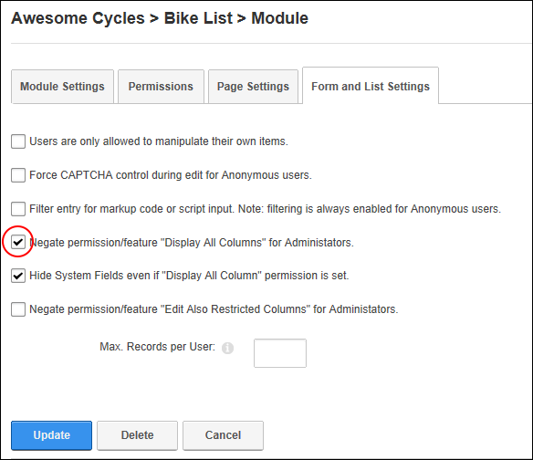

Negating Unique Column Permissions for Administrators
How to negate the "Display All Columns" and "Edit Private Columns" permission settings for a list created using the Form and List module.
-
- Select the Form and List Settings tab.
- At Negate permission/feature "Display All Columns" for Administrators, select from these options:
- Mark
 the check box if to negate "Display All Columns" settings for Administrators.
the check box if to negate "Display All Columns" settings for Administrators.
- Unmark
 the check box to apply "Display All Columns" as set.
the check box to apply "Display All Columns" as set.
- At Negate permission/feature "Edit Also Restricted Columns" for Administrators, select from these options:
- Mark the check box if to negate "Edit Also Restricted Columns" settings for Administrators.
- Unmark the check box to apply "Edit Also Restricted Columns" as set.
-
Click the Update button.
For more on setting and modifying these permissions. See "Setting List Permissions" and See "Setting Form Permissions"

Negating Permissions